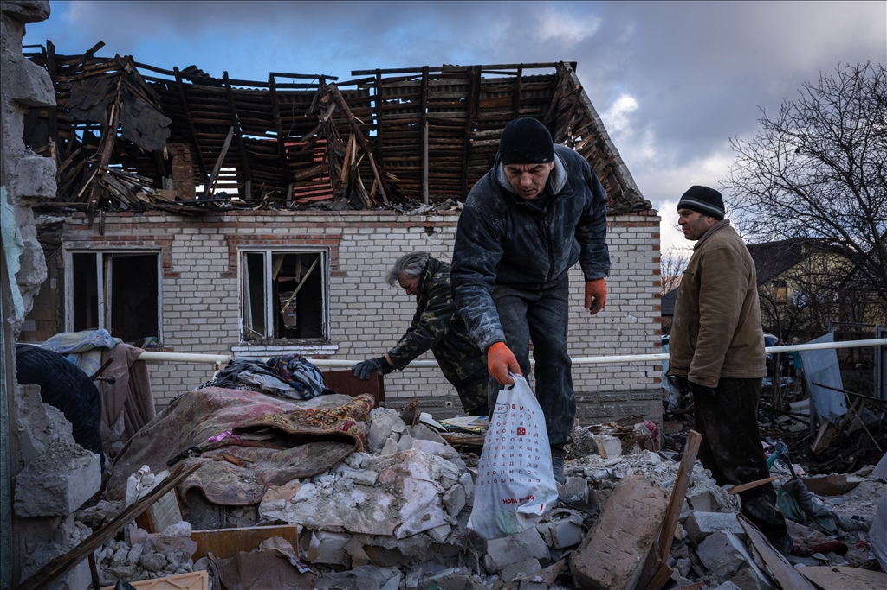

Savaş ve Sivil Hakların Önemi

Savaş zamanlarında sivillerin korunması, modern uluslararası hukukun en temel taşlarından biridir. Silahlı çatışmalar sırasında sivil halkın güvenliği, temel hakları ve insani ihtiyaçlarının karşılanması, uluslararası toplumun en önemli sorumluluklarından biridir.
Günümüzde yaşanan çatışmalarda sivillerin maruz kaldığı tehditler ve ihlaller, bu konunun önemini daha da artırmaktadır. Özellikle kadınlar, çocuklar ve yaşlılar gibi hassas grupların korunması öncelikli konular arasındadır.